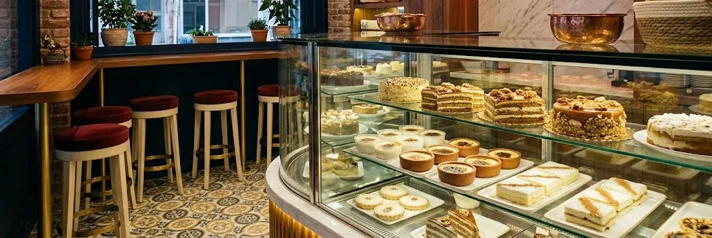
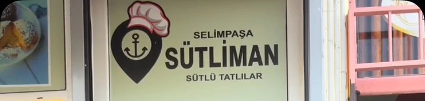

Selimpaşa Sahili · Silivri
Adı gibi sakin,
tadı gibi taze.
“Sütliman” — Rumcadan dilimize geçen ve dalgasız, aynasız durgun bir denizi anlatan eski bir söz. Selimpaşa'da tam da böyle sakin bir sokakta, her gün elde açılan sütlü tatlılar ve kovada servis edilen sıcak waffle'larıyla küçük bir aile dükkânı.
- 4,8
- ★ Google puanı
- 56
- değerlendirme
- 11:00
- her gün açılış
 İmza anımız — kırılan top, akan çikolata
İmza anımız — kırılan top, akan çikolata
Bir isim, iki anlam
Süt + Liman
Dükkânın adı tesadüf değil. Bir yanı süt — her sabah taze hazırlanan trileçeden supangleye kadar bütün tatlıların hamuru. Öbür yanı liman — Selimpaşa'nın Marmara'ya bakan, rüzgârsız, sakin kıyısı. İkisi bir araya gelince ortaya “sütliman” çıkıyor: kelimenin tam anlamıyla, dupduru bir deniz kadar sakin.
Bünyamin Bey ve ailesinin işlettiği bu küçük dükkânda tatlılar günlük üretiliyor, kapıdan girenler çoğu zaman ismiyle karşılanıyor. Butik, ferah ve samimi — mahallenin kendi tatlıcısı.
- Aile işletmesiSelimpaşa'da yerel üretim
- Günlük tazeVitrin her gün yenileniyor
- 4,8 / 556 Google değerlendirmesi

Elde açılan,
günlük taze.

Google yorumlarından
Mahallenin sözü
Tatlılar günlük üretim, butik ve ferah bir dükkân — Selimpaşa'da böyle yerlerin olması güzel.
Yerel Rehber değerlendirmesi
Ürünler taze ve lezzetli, ilgi alaka üst seviyede. Ellerine sağlık.
Google yorumu
İşletme sahipleri güler yüzlü ve samimi, tam bir mahalle esnafı sıcaklığı.
Google yorumu
Bize uğrayın
Konum & Saatler
Halaskargazi Cd. 47/ASelimpaşa, 34570 Silivri/İstanbul
| Çrş – Prş | 11:00–00:00 |
|---|---|
| Cuma – Cmt | 11:00–01:00 |
| Pazar – Sal | 11:00–00:00 |